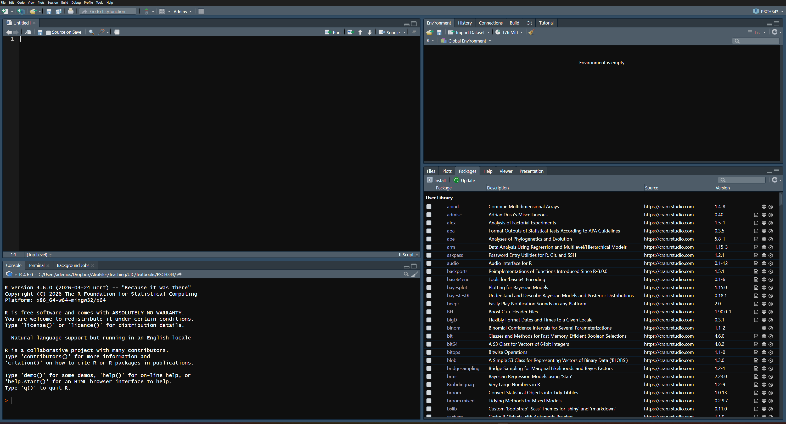

# This is a comment. R ignores it. Future You should not.
2 + 2[1] 4R is a free, open-source programming language built for statistics, data analysis, and graphics. It was developed by people who enjoy statistics enough to create an entire language for it. We should probably be grateful and slightly concerned.
Why are we using it?
R changes more frequently than a pirate changes their underwear. Packages change too. This is the price of living in a flexible, community-driven ecosystem. When old code breaks, it does not mean you are stupid. It means you have joined the rest of us in the never-ending struggle to be hip with what the kids are doing today—like skibidi or whatever nonsense you all say now.
R is the language and the statistical engine. RStudio is an integrated development environment, or IDE, that gives R a useful place to live. R does the calculations; RStudio provides the script editor, console, plots, files, help, and many little buttons you will ignore until the day they save you.
Think of R as a temperamental but Michelin-starred chef. RStudio is their kitchen. Installing only RStudio is like building a professional kitchen and forgetting the chef.
Here is the kitchen. You will spend a semester in it, so it is worth thirty seconds of looking.

You will ignore most of the buttons. That is fine. The four panes are the whole map. The name in the far top-right corner is the Project that is open, which will matter in a moment.
R.version.string. If R replies with a version, the creature is alive.Windows users can usually keep multiple versions of R. On any operating system, install a version that matches your computer. For example, Apple Silicon Macs use the ARM64 build. The download pages provide the current choices, which is safer than this textbook pretending the year will remain 2026 forever.
Give yourself time to install software. Starting 30 minutes before class is not “giving yourself time.” That is creating a hair-on-fire emergency and assigning it to Future You. Don’t burn all your hair off, or you will end up a bald ogre like me.
If the install fails, or your laptop is old enough to remember the Obama administration, use Posit Cloud instead. It runs RStudio in a browser, the free tier might be enough for this course, and you can install locally later when you have an afternoon and a better mood.
If RStudio behaves strangely after an update, close it completely and open it again. This solves most problems. Sometimes it fails for you, you bring the computer to me, and it works in my mere presence. The explanation is simple: I am a very sophisticated android. If you do not have access to me, find someone you suspect is also a sophisticated android.
You can type directly into the Console, but console commands are easy to lose. Put work you care about in an R script: a plain-text file ending in .R.
In RStudio, choose File > New File > R Script. Type the following into the script:
# This is a comment. R ignores it. Future You should not.
2 + 2[1] 4Run a line with Ctrl + Enter on Windows or Command + Enter on a Mac. You may also highlight several lines and run them together.
Comments begin with #. Write comments that explain why the code exists. # calculate the mean above mean(scores) is not a revelation. # exclude the practice trial before calculating each person's mean may prevent a future disaster.
For this book, make an RStudio Project for your work. Projects keep scripts, data, and output together and reduce the need for setwd(), which is the command people use to make code work only on their own computer.
I regret to report that middle-school mathematics has returned!
R follows the usual order of operations:
()^* and /+ and -Operations at the same level are generally handled in their defined order. The humane solution is to use parentheses whenever a tired person might have to stare at the expression.
2 + 3 * 4[1] 14(2 + 3) * 4[1] 2010 / 2 * 5[1] 2510 / (2 * 5)[1] 1(5 + 3)^2 / 4[1] 16-2^2 # surprise: the exponent goes first, so this is -(2^2)[1] -4(-2)^2 # write it this way if you meant "negative two, squared"[1] 4Those expressions are not equivalent. Parentheses are cheap.
That last example matters sooner than you think. In a few chapters we start squaring how far each person sits from the mean, and half of those distances are negative. Write the parentheses. Asking your instructor or TA to hunt down that bug will make them question their life choices.
Suppose a stress score is 10, and our terrible theory predicts performance using
\[ \widehat{Y} = 80 - 2(\text{Stress}). \]
In R:
stress <- 10
predicted_performance <- 80 - 2 * stress
predicted_performance[1] 60R does not understand implied multiplication. Write 2 * stress, not 2stress. R is powerful, not psychic.
The assignment arrow <- stores a value inside an object.
coffee_cups <- 4
hours_of_sleep <- 3
regret <- coffee_cups^2 / hours_of_sleep
regret[1] 5.333333Read <- as “gets.” coffee_cups <- 4 means coffee_cups gets 4. You may see = used for assignment. It often works, but this book will generally use <- because it makes assignment easier to recognize.
Object names cannot contain spaces. Use names such as exam_score, ExamScore, or exam.score. Pick a system and stick to it.
A vector stores several values of the same basic type. The function c() combines values into a vector:
anxiety <- c(4, 7, 6, 9, 3)
anxiety[1] 4 7 6 9 3mean(anxiety)[1] 5.8sd(anxiety)[1] 2.387467length(anxiety)[1] 5A function performs a job. Its arguments go inside parentheses. In mean(anxiety), the function is mean() and the object we hand it is anxiety.
Arguments can change what a function does:
anxiety_with_missing <- c(4, 7, NA, 9, 3)
mean(anxiety_with_missing)[1] NAmean(anxiety_with_missing, na.rm = TRUE)[1] 5.75NA means a value is missing. R refuses to quietly pretend it is not there. The argument na.rm = TRUE tells mean() to remove missing values for this calculation.
A data frame is a rectangular data set. Rows usually represent cases or observations; columns represent variables.
study <- data.frame(
student = c("A", "B", "C", "D"),
therapy = c("CBT", "CBT", "Control", "Control"),
anxiety = c(4, 7, 8, 6)
)
study student therapy anxiety
1 A CBT 4
2 B CBT 7
3 C Control 8
4 D Control 6summary(study) student therapy anxiety
Length :4 Length :4 Min. :4.00
N.unique :4 N.unique :2 1st Qu.:5.50
N.blank :0 N.blank :0 Median :6.50
Min.nchar:1 Min.nchar:3 Mean :6.25
Max.nchar:1 Max.nchar:7 3rd Qu.:7.25
Max. :8.00 In a real study, those rows represent participants who consented to research. They are not a convenient supply of organs, volcano offerings, or targets for a chainsaw-based manipulation of fear. The Institutional Review Board remains stubborn about this.
Typing a data frame by hand was fine for four students. Real data arrives as a spreadsheet, usually a CSV file—comma-separated values, which is a spreadsheet with the formatting boiled off.
Reading one in takes a single line:
study <- read.csv("anxiety_study.csv")R looks for that file in your working directory. This is why we made a Project: open the Project first, keep the CSV in the Project folder, and R already knows where to look. Skip the Project and you end up typing paths like C:/Users/you/Desktop/stuff/final_FINAL/data.csv, which works perfectly on exactly one computer in the world.
Never trust a file you have not looked at.
head(study) student therapy anxiety
1 A CBT 4
2 B CBT 7
3 C Control 8
4 D Control 6str(study)'data.frame': 4 obs. of 3 variables:
$ student: chr "A" "B" "C" "D"
$ therapy: chr "CBT" "CBT" "Control" "Control"
$ anxiety: num 4 7 8 6head() prints the first few rows. str() prints the structure: how many rows, how many columns, and what R thinks each column is. num means numbers. chr means text.
R read therapy as plain text. It does not know those words are conditions. A factor is R’s word for a categorical variable—a fixed set of groups.
study$therapy <- factor(study$therapy)
str(study)'data.frame': 4 obs. of 3 variables:
$ student: chr "A" "B" "C" "D"
$ therapy: Factor w/ 2 levels "CBT","Control": 1 1 2 2
$ anxiety: num 4 7 8 6The $ pulls one column out of a data frame. Now therapy is a factor with two levels instead of loose text.
Do this every time. When you run a t-test or a regression later, R has to know that CBT and Control are two groups being compared, not two words it happened to find lying around.
table(study$therapy)
CBT Control
2 2 table() counts how many cases fall into each category. Run it on every categorical variable before you analyze anything. It is the fastest way to discover that you have 47 people in one condition and 3 in the other, or that somebody typed “Contol.”
set.seed()This book fakes a lot of data. Almost every chapter simulates a study rather than making you go collect one, and simulated data starts with random numbers.
R can produce them on demand:
runif(5) # five random numbers between 0 and 1[1] 0.5026243 0.1774144 0.6249053 0.1205483 0.8068631Run that line again and you get five different numbers. Run it tomorrow, different again. That is the point of random.
It is also a problem for a textbook. If my numbers change every time the book is built, nothing I write about them stays true, and worse, you would run my code and get a different answer than the one printed on the page, and reasonably conclude you had broken something.
So we cheat, on purpose:
set.seed(42)
runif(5)[1] 0.9148060 0.9370754 0.2861395 0.8304476 0.6417455set.seed(42)
runif(5) # the exact same five numbers[1] 0.9148060 0.9370754 0.2861395 0.8304476 0.6417455set.seed() fixes R’s starting point for generating randomness. Same seed, same sequence, every time, on every computer. The number inside is arbitrary and means nothing. People use 42, 123, their birthday, or in my case whatever I typed without thinking.
It is not making the numbers less random. The sequence is just as unpredictable as before. You have only told R which unpredictable sequence to use.
Two habits worth forming now:
set.seed() in this book, it is there so your output matches mine. If your numbers differ from the page, check that you ran the seed line too.Packages add functions to R. Install a package once:
install.packages("tidyverse")Load it each time you start a new R session and need it:
library(tidyverse)The quotation marks belong in install.packages("tidyverse"), but not in library(tidyverse). This distinction exists because the Probability Gods were briefly allowed to help design software.
|>You will start seeing this symbol in a couple of chapters, so meet it now. The pipe |> takes the thing on its left and hands it to the function on its right as the first argument. Read it out loud as the word “then.”
study |>
head(2) student therapy anxiety
1 A CBT 4
2 B CBT 7That says “take study, then show me the first two rows,” and it does exactly what head(study, 2) does. With one step the pipe buys you nothing. With five steps stacked up it is the difference between code you can read top to bottom and code buried inside nested parentheses, which is why the tidyverse chapter at the end of the book runs on it.
One warning, because you will meet it on Stack Overflow within a week. Older R code uses %>% instead, a pipe that came from the magrittr package. For everyday work the two mean the same thing, so when you find %>% in somebody’s code you can read it as |> and carry on. This book uses |> throughout. The difference is that |> is built into R itself while %>% needs a package loaded first, which is a good reason to prefer the one that always works.
R ships with a manual for every function. Put a ? in front of the name:
?meanThe help page opens in the Help pane. Most of it is written for people who already know the answer, so do not read it top to bottom. Read two parts:
na.rm.An error means R stopped. A warning means R finished but wants you to know something suspicious happened. A message is usually informational. Read the first error carefully, because the next 47 errors may merely be its panicked descendants.
When code fails:
That is enough R to begin. You do not need to memorize the language before doing statistics. You need to keep your work in scripts, run small pieces, inspect the result, and understand what you asked R to do.
<- makes an object. c() makes a vector out of several values.mean(x, na.rm = TRUE).read.csv() brings data in. str() and head() tell you what actually showed up.table() them before you trust anything.library() every session, forever.? the function.R will calculate nonsense with breathtaking speed. The thinking remains your job.